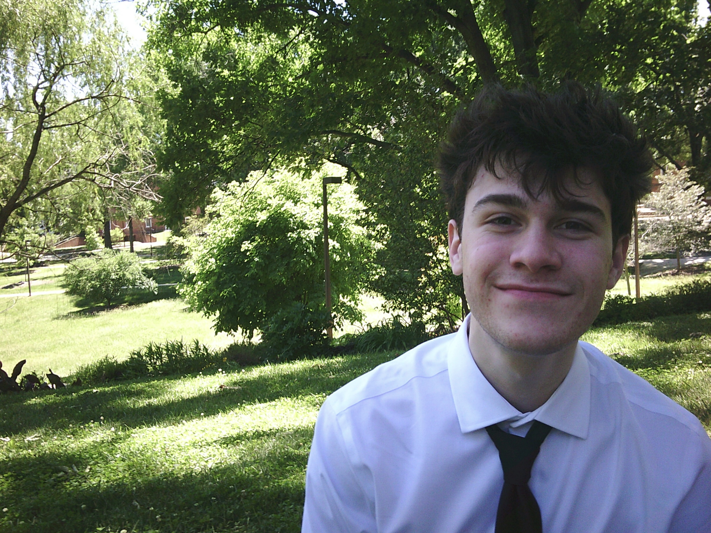

Early career archivist and journalist with an interest in the arts and media preservation
Responsibilities include pricing and grading vinyl records: Evaluating collections, cleaning records, assessing media condition, listing in online marketplace. Cashiering: POS transaction training, outdoor festival vending, customer service, bookkeeping. Inventory Management: Stocking shelves, packing and shipping online orders, logging in-store purchases.
Responsibilities include ushering and selling concert merchandise: Doors for DC venues including The Black Cat, Songbyrd Music House, and Parks at Historic Walter Reed. VIP guiding and wrist stamping. Social media management: Instagram weekly posts, giveaway announcements, ticket distribution.
Responsibilities include music curation: Writing episodes, developing playlists, and compiling artist bios. Digital and FM broadcasting: Studio training and FCC guidelines training. Record library organization: Archiving of LPs, 45s, cassettes, CDs. Arts and culture blogging: Reviewing records, concert reports, interviewing local artists, editing articles.